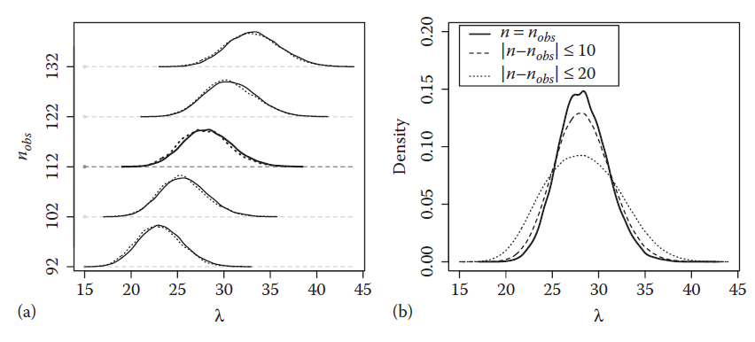
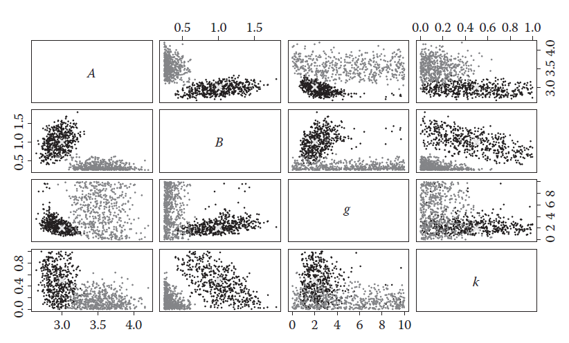
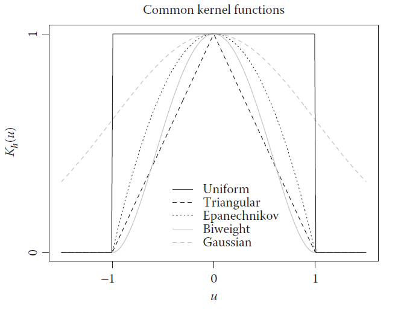
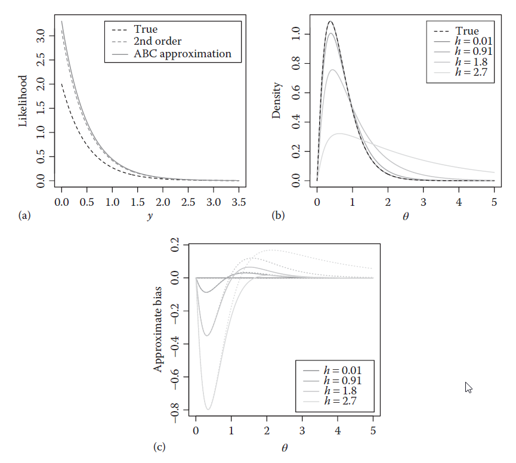
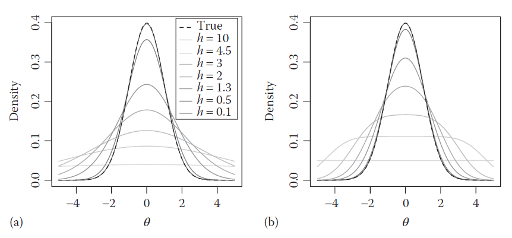
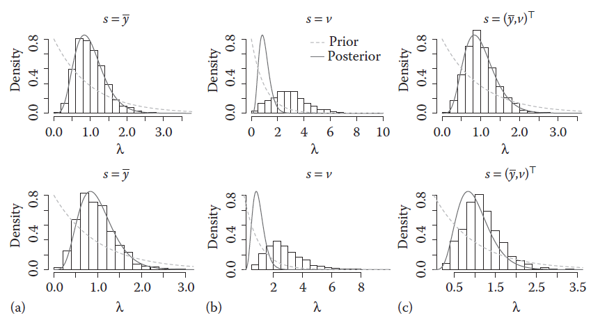
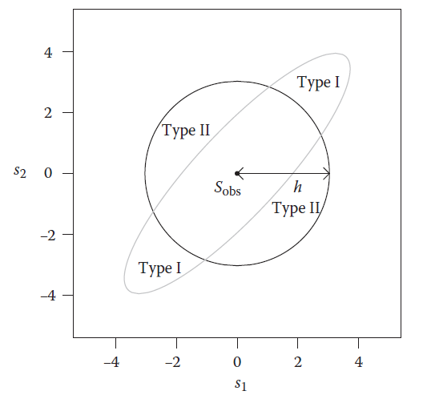
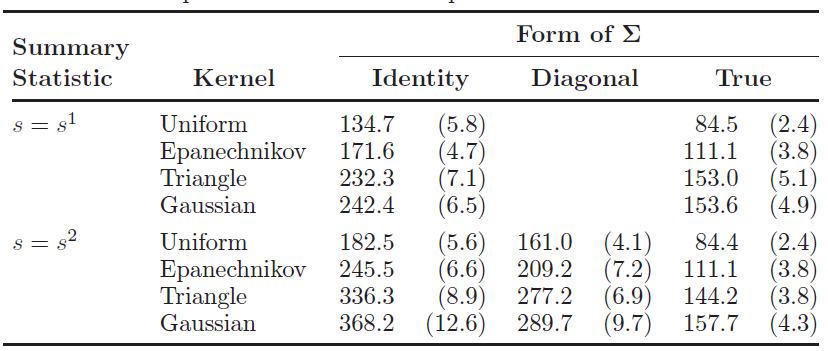

Bayesian inference
Our goal is to estimate an expectation of \(a(\theta)\) under the posterior distribution
\[\pi(\theta|y_{obs})=\frac{\pi(\theta)p(y_{obs}|\theta)}{p(y_{obs})}\propto \pi(\theta)p(y_{obs}|\theta)\]
\(\pi(\theta)\) is the prior distribution
\(p(y|\theta)\) is the likelihood function
the constant \(p(y_{obs})\) is intractable
Suppose that one can generate samples \(\theta^{(1)},\dots,\theta^{(N)}\sim \pi(\theta|y_{obs})\), then
\[E[a(\theta)|y_{obs}]\approx \frac 1 N\sum_{i=1}^N a(\theta^{(i)})\]
This is the basic idea of Monte Carlo (MC).
Acceptance rejection (AR) methods
the target density \(f(\theta)\)
the proposal \(g(\theta)\), with \(g(\theta)>0\) if \(f(\theta)>0\)
\(K\ge \sup_{\theta}\frac{f(\theta)}{g(\theta)}\)
The algorithm goes below, for \(i=1,\dots,N\):
Step 1: generate \(\theta^{(i)}\sim g(\theta)\)
Step 2: accept \(\theta^{(i)}\) with probability \(r(\theta^{(i)})=\frac{f(\theta^{(i)})}{Kg(\theta^{(i)})}\). Else go to Step 1.
To fit into Bayesian inference, let \(f(\theta)=\pi(\theta)p(y_{obs}|\theta)\)
the proposal \(g(\theta)=\pi(\theta)\), the acceptance probability is the likelihood \(r(\theta)=p(y_{obs}|\theta)\)
generally, the acceptance probablity is \[r(\theta)=\frac{\pi(\theta)}{Kg(\theta)}p(y_{obs}|\theta),\ K=\sup_{\theta}\frac{\pi(\theta)}{g(\theta)}\]
Importance sampling (IS)
the target density \(f(\theta)\)
the proposal \(g(\theta)\), with \(g(\theta)>0\) if \(f(\theta)>0\)
The algorithm goes below, for \(i=1,\dots,N\):
Step 1: generate \(\theta^{(i)}\sim g(\theta)\)
Step 2: compute the weight \(w(\theta^{(i)})=\frac{f(\theta^{(i)})}{g(\theta^{(i)})}\).
Return the weight samples \((w(\theta^{(i)}),\theta^{(i)}), i=1,\dots,N\)
To fit into Bayesian inference, let \(f(\theta)=\pi(\theta)p(y_{obs}|\theta)\), then the self-normalized IS estimator is
\[E[a(\theta)|y_{obs}]\approx \frac{\frac 1 N\sum_{i=1}^N w(\theta^{(i)})a(\theta^{(i)})}{\frac 1 N\sum_{i=1}^N w(\theta^{(i)})}\]
MCMC
the target density \(f(\theta)\)
the proposal distribution: \(q(\theta'|\theta)\)
The algorithm goes below:
- for \(i=0\), draw a starting poing \(\theta^{(0)}\sim f_0(x)\)
- for \(i=1,\dots,N\), sample \(\theta^{(i)}\sim q(\theta'|\theta^{(i-1)})\), accept \(\theta^{(i)}\) with probability \[r(\theta^{(i-1)},\theta^{(i)})=\min\left(\frac{f(\theta^{(i)})q(\theta^{(i-1)}|\theta^{(i)})}{f(\theta^{(i-1)})q(\theta^{(i)}|\theta^{(i-1)})},1\right)\] Otherwise, taking \(\theta^{(i)}=\theta^{(i-1)}\)
To fit into Bayesian inference, let \(f(\theta)=\pi(\theta)p(y_{obs}|\theta)\)
- the acceptance probablity is \[r(\theta,\theta')=\min\left(\frac{p(y_{obs}|\theta')q(\theta|\theta')}{p(y_{obs}|\theta)q(\theta'|\theta)},1\right)\]
Motivation for ABC
Both the AR and MCMC require the evaluation of likelihood function.
However, for an increasing range of scientific problems, numerical evaluation of the likelihood function is either computationally prohibitive, or simply not possible
Instances when the complete likelihood function is unavailable can occur when the model density function is only implicitly defined, for example, through quantile or characteristic functions
A g-and-k distribution
The univariate g-and-k distribution is a flexible unimodal distribution that is able to describe data with significant amounts of skewness and kurtosis. Its density function has no closed form, but is alternatively defined through its quantile function as:
\[Q(q|A,B,g,k)=A+B\left[1+c\frac{1-\exp\{-gz(q)\}}{1+\exp\{-gz(q)\}}\right](1+z(q)^2)^kz(q)\]
\(c=0.8,\ B>0, k>-1/2\), \(z(q)=\Phi^{-1}(q)\)
if \(g=k=0\), it is the normal density
Likelihood-free rejection sampling I
While direct evaluation of the acceptance probability is not available if the likelihood is computationally intractable, it is possible to stochastically determine whether or not to accept or reject a draw from the sampling density, without numerical evaluation of the acceptance probability.
Assume that the data \(y\) are discrete. The algorithm goes below, for \(i=1,\dots,N\):
Step 1: generate \(\theta^{(i)}\sim g(\theta)\)
Step 2: generate \(y\sim p(y|\theta^{(i)})\) from the likelihood
Step 3: if \(y=y_{obs}\), then accept \(\theta^{(i)}\) with probability \(r(\theta^{(i)})=\frac{\pi(\theta^{(i)})}{Kg(\theta^{(i)})}\). Else go to Step 1.
Stereological extremes
Interest is in the distribution of the size of inclusions, microscopically small particles introduced during the production of steel. The steel strength is thought to be directly related to the size of the largest inclusion. Commonly, the sampling of inclusions involves measuring the maximum cross-sectional diameter of each observed inclusion, \(y_{obs}=(y_{obs,1},\dots,y_{obs,n})\), obtained from a two-dimensional planar slice through the steel block.
unobserved true inclusion diameter \(V_i\) with \(y_{obs,i}\le V_i\)
inclusions were spherical with diameters \(V\) follows a generalised Pareto distribution \[P(V\le v|V>v_0)=1-\max\{1+\xi(v-v_0)/\sigma,0\}^{-1/\xi}\]
the centres followed a homogeneous Poisson process with rate \(\lambda>0\) in the volume of steel
the parameter is \(\theta=(\lambda,\sigma,\xi)\)
Stereological extremes
Anderson and Coles (2002) were able to construct a tractable likelihood function for this model. However, while their model assumptions of a Poisson process are not unreasonable, the assumption that the inclusions are spherical is not plausible in practice.
Bortot et al. (2007) generalised this model to a family of ellipsoidal inclusions. While this model is more realistic than the spherical inclusion model, there are analytic and computational difficulties.
Analysis
Consider the simple case \(\sigma=1.5,\xi = 0.1\) with \(\lambda\) unknown. Let \(n_{obs}\) be the observed number of inclusions, so that \(p(\theta|y_{obs})=p(\lambda|n_{obs})\).
prior density \(\pi(\lambda)\sim U(0,100)\)
the data \(n_{obs}\in \{92,102,112,122,132\}\)
Acceptance rates for the right panel are \(0.5\%,10.5\%,20.5\%\)

Likelihood-free rejection sampling II
For a given \(h>0\), the algorithm goes below, for \(i=1,\dots,N\):
Step 1: generate \(\theta^{(i)}\sim g(\theta)\)
Step 2: generate \(y\sim p(y|\theta^{(i)})\) from the likelihood
Step 3: if \(||y- y_{obs}||\le h\), then accept \(\theta^{(i)}\) with probability \(r(\theta^{(i)})=\frac{\pi(\theta^{(i)})}{Kg(\theta^{(i)})}\). Else go to Step 1.
The g-and-k distribution
\(y_{obs}\) of length \(1000\) is generated from the \(g\)-and-\(k\) distribution with parameter \(\theta_0=(3,1,2,0.5)\)
prior density
\[\pi(\theta) = \pi(A)\pi(B)\pi(g)\pi(k) = N(1,5)\times N(0.25,2) \times U(0,10) \times U(0,1)\]
The results

grey dots: for the AR rule \(||y-y_{obs}||\le h\)
black dots: for the AR rule \(||S(y)-S(y_{obs})||\le h\)
The use of summary statistic
Summary statistic (Drovandi and Pettitt, 2011): \(S(y) = (S_A,S_B,S_g,S_k)\)
- \(S_A=E_4\)
- \(S_B=E_6-E_2\)
- \(S_g=(E_6+E_2-2E_4)/S_B\)
- \(S_k = (E_7-E_5+E_3-E_1)/S_B\)
- \(E_1\le E_2 \le \cdots \le E_8\) are the octiles of \(y\)
Likelihood-free rejection sampling III
For a given \(h>0\), the algorithm goes below, for \(i=1,\dots,N\):
Step 1: generate \(\theta^{(i)}\sim g(\theta)\)
Step 2: generate \(y\sim p(y|\theta^{(i)})\) from the likelihood
Step 3: if \(||S(y)- S(y_{obs})||\le h\), then accept \(\theta^{(i)}\) with probability \(r(\theta^{(i)})=\frac{\pi(\theta^{(i)})}{Kg(\theta^{(i)})}\). Else go to Step 1.
NOTE: usually \(\text{dim}(S(y))\ll\text{dim}(y)\)
Approximate Bayesian Computation
ABC is a kind of likelihood-free methods developed for when the likelihood function is computationally intractable or otherwise unavailable.
The likelihood-free rejection algorithm with \(h=0\) which is exact (work for discrete cases), is not an ABC algorithm
For \(h>0\), it is an ABC algorithm as the samples will be drawn from an approximation to the posterior distribution.
The aim of any ABC analysis is to find a practical way of performing the Bayesian analysis, while keeping the approximation and the computation to a minimum.
ABC with general kernels
The approximate joint distribution:
\[\pi_{ABC}(\theta,y|y_{obs})\propto I\{||y-y_{obs}||\le h\}p(y|\theta)\pi(\theta)\]
- generalize the AR rule \(I\{||y-y_{obs}||\le h\}\) to smoothing kernel function \(K_h(||y-y_{obs}||)\)
\[\pi_{ABC}(\theta,y|y_{obs})\propto K_h(||y-y_{obs}||)p(y|\theta)\pi(\theta)\]
The kernel: \(K_h(u)=\frac 1 h K(u/h)\)
\(K(u)\) is a symmetric function
\(K(u)\ge 0\) for all \(u\)
\(\int K(u) d u=1,\ \int uK(u)du=0,\ \int u^2K(u)du<\infty\)
\(h\) is the bandwidth
Common kernels
- Uniform \(\frac 1 2 I\{|u|\le 1\}\)
- Tringular \((1-|u|)I\{|u|\le 1\}\)
- Epanechnikov \(\frac 3 4(1-u^2)I\{|u|\le 1\}\)
- Biweight \(\frac{15}{16}(1-u^2)^3I\{|u|\le 1\}\)
- Gaussian \(\frac{1}{\sqrt{2\pi}}e^{-u^2/2}\)

ABC Rejection Sampling Algorithm I
For a given \(h>0\), the algorithm goes below, for \(i=1,\dots,N\):
Step 1: generate \(\theta^{(i)}\sim g(\theta)\)
Step 2: generate \(y\sim p(y|\theta^{(i)})\) from the likelihood
Step 3: accept \(\theta^{(i)}\) with probability \(r(\theta^{(i)})=\frac{K_h(||y-y_{obs}||)\pi(\theta^{(i)})}{Kg(\theta^{(i)})}\), where \(K\ge \sup_{\theta}\frac{\pi(\theta)}{g(\theta)}\sup_uK(u)\). Else go to Step 1.
Approximate Posterior Distribution
\[\pi_{ABC}(\theta,y|y_{obs})\propto K_h(||y-y_{obs}||)p(y|\theta)\pi(\theta)\]
The approximate posterior:
\[\pi_{ABC}(\theta|y_{obs})=\int \pi_{ABC}(\theta,y|y_{obs}) d y\propto \pi(\theta)\int K_h(||y-y_{obs}||)p(y|\theta)dy\]
ABC approximation to the true likelihood:
\[p_{ABC}(y_{obs}|\theta) = \int K_h(||y-y_{obs}||)p(y|\theta)dy.\]
\[\pi_{ABC}(\theta|y_{obs})\to \pi(\theta|y_{obs}) \text{ as }h\to 0.\]
Example 1
likelihood function \(p(y|\theta)=\theta e^{-\theta y}\), i.e., \(Exp(\theta)\)
prior \(\pi(\theta) \propto \theta^{\alpha-1}e^{-\beta\theta}\), i.e., \(Gamma(\alpha,\beta)\)
posterior density \(Gamma(\alpha+1,\beta+y_{obs})\)
uniform kernel \(K_h(u) = \frac 1{2h}1\{|u|\le h\}\)
\[p_{ABC}(y_{obs}|\theta) = \int K_h(||y-y_{obs}||)p(y|\theta)dy=\frac 1{2h}e^{-\theta y_{obs}}(e^{\theta h}-e^{-\theta h})\]
\[p_{ABC}(y_{obs}|\theta)-p(y_{obs}|\theta)=p(y_{obs}|\theta)\left(\frac{e^{\theta h}-e^{-\theta h}}{2\theta h}-1\right)\approx \frac{h^2\theta^3e^{-\theta y_{obs}}}{6}\]
\[\pi_{ABC}(\theta|y_{obs}) = \frac{\theta^{\alpha-1}e^{-\theta (y_{obs}+\beta)}(e^{\theta h}-e^{-\theta h})}{\frac{\Gamma(\alpha)}{(y_{obs}+\beta-h)^\alpha}-\frac{\Gamma(\alpha)}{(y_{obs}+\beta+h)^\alpha}}\]
Plots

Example 2
likelihood \(N(\theta,\sigma_0^2)\) with known \(\sigma_0\)
prior \(N(m_0,s_0^2)\)
Guassian kernel \(K_h(u)=N(0,h^2)\)
\(p_{ABC}(\bar y_{obs}|\theta)=N(\theta,\sigma^2/n+h^2)\)
\(\pi_{ABC}(\theta|y_{obs})=N(\mu_{ABC},\sigma_{ABC}^2)\)
\[\mu_{ABC} = \frac{\frac{m_0}{s_0^2}+\frac{\bar y_{obs}}{\sigma_0^2/n+h^2}}{\frac{1}{s_0^2}+\frac{1}{\sigma_0^2/n+h^2}}\]
\[\frac{1}{\sigma_{ABC}^2}=\frac{1}{s_0^2}+\frac{1}{\sigma_0^2/n+h^2}\]
Plots

Gaussian kernel vs. uniform kernel
The ABC posterior approximation may be improved simply by rescaling the posterior variance to remove the term \(h^2\) (Drovandi 2012).
The Use of Summary Statistics
For a given \(h>0\), the algorithm goes below, for \(i=1,\dots,N\):
Step 1: generate \(\theta^{(i)}\sim g(\theta)\)
Step 2: generate \(y\sim p(y|\theta^{(i)})\) from the likelihood
Step 3: accept \(\theta^{(i)}\) with probability \(r(\theta^{(i)})=\frac{K_h(||S(y)-S(y_{obs})||)\pi(\theta^{(i)})}{Kg(\theta^{(i)})}\), where \(K\ge \sup_{\theta}\frac{\pi(\theta)}{g(\theta)}\sup_uK(u)\). Else go to Step 1.
Example 3
the model \(y=(y_1,y_2), y_i\sim B(n,\theta)\)
prior \(\theta\sim U(0,1)\)
three sufficient statistics: \(s^1=(y_1,y_2)\), \(s^2 =(y_{(1)},y_{(2)})\), \(s^3=y_1+y_2\)
Acceptance rates (\(h=0\)) are:
\(r_1=C_n^{y_1}C_n^{y_2} B(y_1+y_2+1,2n-y_1-y_2+1)\)
\(r_2 = [2-1\{y_{(1)}=y_{(2)}\}]r_1\)
\(r_3 = 1/(2n+1)\)
E.g., \(y_{obs}=(1,2)\) from \(n=5\), \(p_1\approx 0.038,\ p_2\approx 0.076,\ p_3\approx 0.091\)
The most efficient choice is the minimal sufficient statistic.
This may still be non-viable in practice; low-dimensional sufficient statistic may not exist – Weibull distribution
Example 2 (continued)
likelihood \(N(\theta,\sigma_0^2)\) with known \(\sigma_0\)
prior \(N(m_0,s_0^2)\)
Guassian kernel \(K_h(u)=N(0,h^2)\)
summary statistic \(s=\bar{y}_{1{:}n'}=\frac{1}{n'}\sum_{i=1}^{n'}y_i\) with \(n'<n\)
\(p_{ABC}(s_{obs}|\theta)=N(\theta,\sigma^2/n'+h^2)\)
\(\pi_{ABC}(\theta|y_{obs})=N(\mu_{ABC},\sigma_{ABC}^2)\)
\[\mu_{ABC} = \frac{\frac{m_0}{s_0^2}+\frac{s_{obs}}{\sigma_0^2/n'+h^2}}{\frac{1}{s_0^2}+\frac{1}{\sigma_0^2/n'+h^2}},\ \frac{1}{\sigma_{ABC}^2}=\frac{1}{s_0^2}+\frac{1}{\sigma_0^2/n'+h^2}\]
- two sources of error: the degree of inefficiency of replacing \(y\) by \(s=S(y)\) and the matching of the simulated and observed data through the Gaussian kernel
The choice of summary statistics for ABC
The choice of summary statistics for an ABC analysis is a critical decision that directly affects the quality of the posterior approximation.
Many approaches for determining these statistics are available, and these are reviewed in Blum et al. (2013) and Prangle (2019). These methods seek to trade off two aspects of the ABC posterior approximation that directly result from the choice of summary statistics.
The dimension of the summary statistic should be large enough so that it contains as much information about the observed data as possible, but also low enough so that the curse-of-dimensionality of matching \(s\) and \(s_{obs}\) is avoided.
Some practical issues with summary statistics
It is NOT always viable to continue to add summary statistics to s until the resulting ABC posterior approximation does not change for the worse.
the model \(y=(y_1,\dots,y_n), y_i\sim Poission(\lambda)\)
prior \(\lambda \sim Gamma(\alpha,\beta)\)
posterior \(\lambda|y\sim Gamma(\alpha+n\bar y,\beta+n)\)
data \(y_{obs}=(0,0,0,0,5)\)
summary statistics: \(s^1=\bar y,\ s^2= v=\sqrt{\frac{1}{n-1}\sum_{i=1}^n(y_i-\bar y)^2}, s^3=(\bar y,v)\)
using uniform kernel with \(h=0\) and \(h=0.3\), \(\alpha=\beta=1\)
Comparison

- top (\(h=0\)), bottom (\(h=0.3\))
- prior \(Gamma(\alpha,\beta)\) (dashed lines), target distribution \(Gamma(\alpha+n\bar y,\beta+n)\) (solid line)
The choice of distance measure
The distance measure \(||s-s_{obs}||\) can also have a substantial impact on ABC algorithm efficiency, and therefore the quality of the posterior approximation.
the most common one is the Euclidean distance
the Mahalanobis distance (Peters et al. 2012; Erhardt and Sisson 2016):
\[||s-s_{obs}||=(s-s_{obs})^\top\Sigma^{-1}(s-s_{obs})\]
- \(\Sigma\) is the covariance matrix of \(s\)
Comparison

the entries of \(s\) may dependent
implementing a circular acceptance region (implying independence and identical scales) induces both type I and type II errors.
Example 4
the model \(y_1,\dots,y_{50}\sim N(\theta,1)\)
prior \(\theta\sim U(-5,5)\)
summary statistics: \(s^1=(\bar y_{1{:}40},\bar y_{41{:}50})\), \(s^2=(\bar y_{1{:}25}-\bar y_{26{:}50},\bar y_{26{:}50})\)
\[\Sigma^1 = Cov(s^1|\theta) = \left( \begin{matrix} 1/40 & 0\\ 0 & 1/10 \end{matrix} \right)\]
\[\Sigma^2 = Cov(s^2|\theta) = \left( \begin{matrix} 2/25 & -1/25\\ -1/25 & 1/25 \end{matrix} \right) \]
Simulation
Mean Number of Summary StatisticGenerations per Final Accepted Particle (with Standard Errors inParentheses)

Pilot analysis on the covariance matrix
To estimate the covariance matrix \(\Sigma\), Luciani et al. (2009) and Erhardt and Sisson (2016) identify some value of \(\theta=\theta^*\) in a high posterior density region via a pilot analysis and then estimate \(Cov(s|\theta^*)\) based on repeated draws from \(p(s|\theta^*)\).
ABC-IS algorithm
the target density \(\pi_{ABC}(\theta|s_{obs})\)
the proposal \(g(\theta)\), with \(g(\theta)>0\) if \(f(\theta)>0\)
For a given \(h>0\), the algorithm goes below, for \(i=1,\dots,N\):
Step 1: generate \(\theta^{(i)}\sim g(\theta)\)
Step 2: generate \(y\sim p(y|\theta^{(i)})\)
Step 3: compute the weight \[w(\theta^{(i)})=\frac{K_h(||S(y)-S(y_{obs})||)\pi(\theta^{(i)})}{g(\theta^{(i)})}\]
Return the weight samples \((w(\theta^{(i)}),\theta^{(i)}), i=1,\dots,N\). The self-normalized IS estimator is
\[E[a(\theta)|y_{obs}]\approx \frac{\frac 1 N\sum_{i=1}^N w(\theta^{(i)})a(\theta^{(i)})}{\frac 1 N\sum_{i=1}^N w(\theta^{(i)})}\]
Summary
All models are approximations to the real data-generation process.
use of summary statistics \(s\), the effect of \(\text{dim}(s)\)
use of kernel appriximation \(K_h\), the effect of bandwidth \(h\)
use of distance measure, the effect of covariance matrix \(\Sigma\) of \(s\)
Monte Carlo error, the effect of the sample size \(N\)